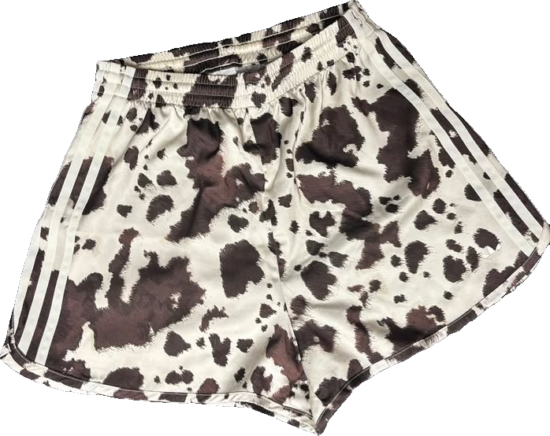

Der neue Drop.
Regelmäßige Drops aus archivierten, vergriffenen und ausverkauften Adidas-Kollektionen — von raren Velours-Pieces über Strick bis zu den Ikonen. Einmal weg, für immer weg.



The Icons
Firebird · Adibreak · Track Tops
The Textures
Velours · Strick · Nylon
Era
Y2K & 90s · Originals
Vintage Vibes. Real Quality.
Built to last.
Built to last.